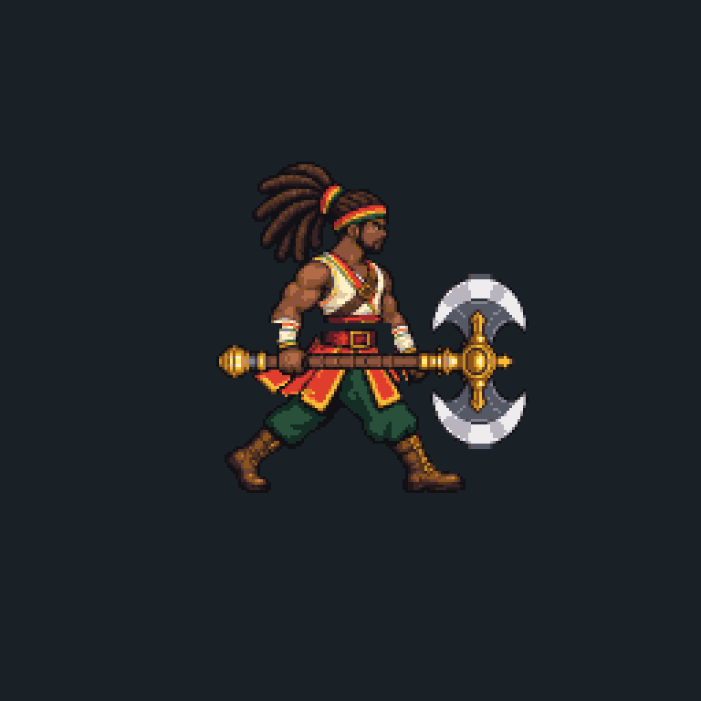
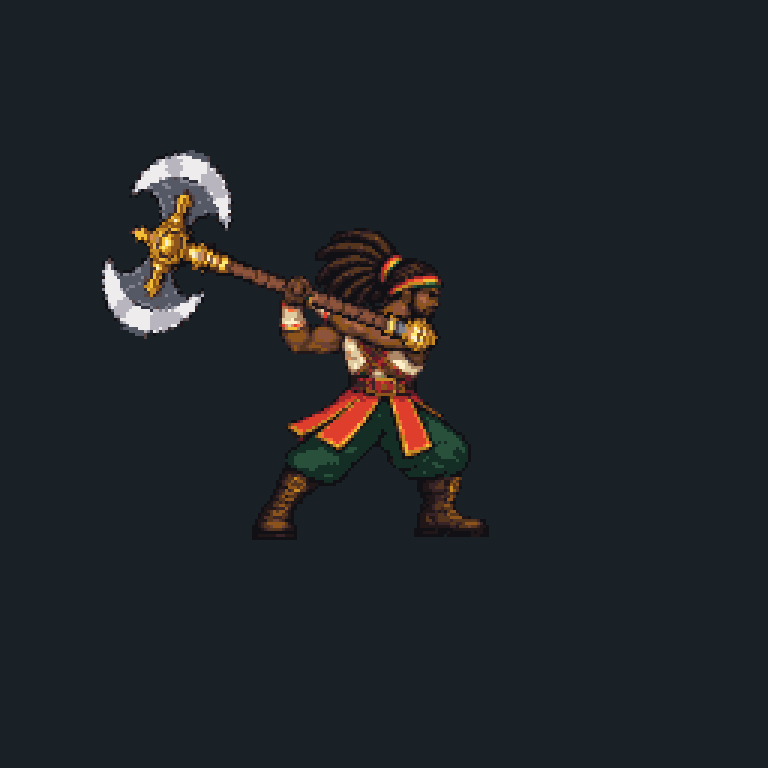
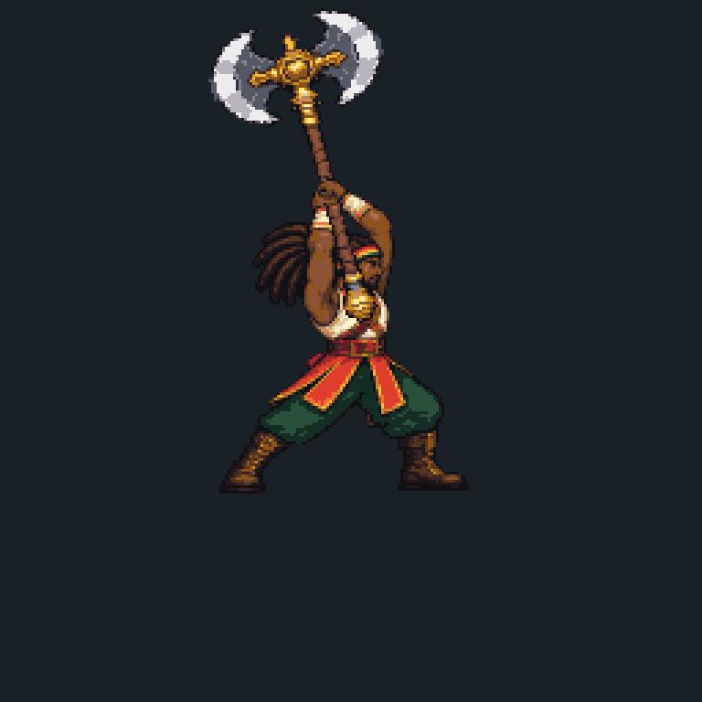
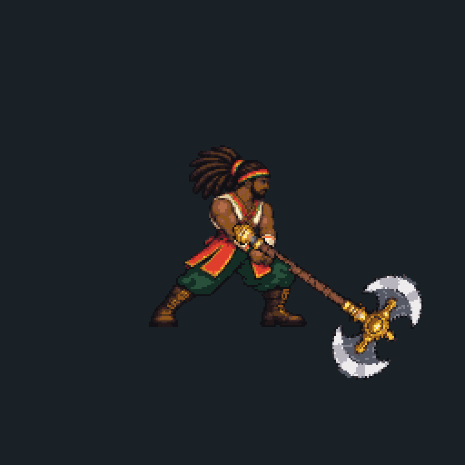

Rasta Quest — corrida e golpes a13.2
Prévia das sequências candidatas no mesmo tamanho de personagem. O teste no Galaxy A13 deve avaliar sensação, encaixes e legibilidade. Estas imagens não concedem aprovação final.

Corrida: passada ampla, ciclo de 480 ms.
Primeiro golpe: varredura lateral.
Segundo golpe: descida do machado.
Terceiro golpe: subida do machado.O que testar no aparelho
Pressione ataque em sequência. Segure defesa para proteção ao redor e devolução dos disparos; acione próximo ao impacto corpo a corpo para o contra-ataque perfeito. Puxe o analógico para cima para pular, retorne ao centro e repita no ar para pulo duplo. O botão de pulo também permite dois acionamentos.
Quando faltar vida, o portal oferecerá Restauração. As outras melhorias preservam a vida restante.
Candidata de teste. Fluidez e acabamento final ainda dependem da revisão desta versão no A13. Direitos, revisão cultural e demais critérios comerciais continuam pendentes.
Ver escolha real de cura no portal · Ver defesa circular na sala